Fire Sword
Player typed: "fire sword"
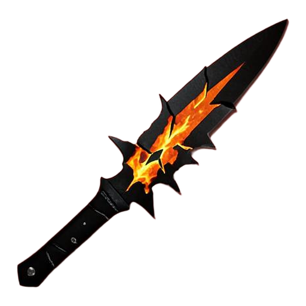
mixed media collage style paper cutout, side view, flat lighting, clean edges, Inferno Blade, The blade is a jagged, obsidian-like slab of black glass that appears to be melting, with a core of searing orange and yellow fire leaking through cracks in the hilt. Distinct, single centered object, contrasting solid background color, no text
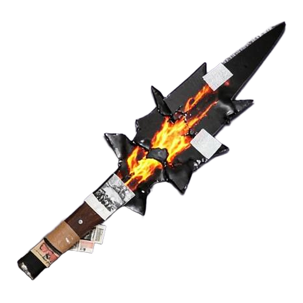
A mixed media collage of Inferno Blade made from cut paper, magazine clippings, and cardboard, held together with visible scotch tape and glue. The blade is a jagged, obsidian-like slab of black glass … Side view, single centered object on a solid contrasting background. Flat lighting, clean edges, no text.
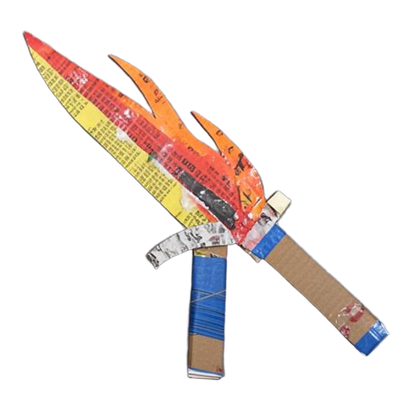
A mixed media collage of Fire sword made from cut paper, magazine clippings, and cardboard, held together with visible scotch tape and glue. The blade is constructed from jagged strips of orange newsprint and red magazine cutouts layered over textured yellow construction paper, while the hilt emerges from a sturdy piece of brown cardboard wrapped in blue book pages. Visible glue smudges and torn edges give the weapon a chaotic, flickering texture Side view, single centered object on a solid contrasting background. Flat lighting, clean edges, no text.
Wooden Barrel
Player typed: "wooden barrel"
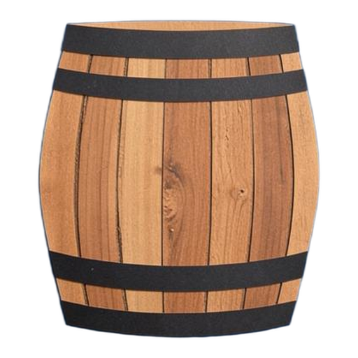
mixed media collage style paper cutout, side view, flat lighting, clean edges, wooden barrel, The sprite depicts a stout, cylindrical barrel with bulging sides… bound by two or three dark metal hoops. Its surface features rough, vertical wooden planks in warm brow, single centered object, contrasting solid background color, no text
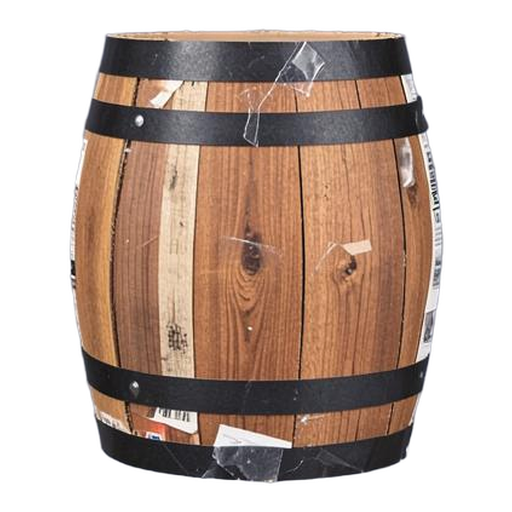
A mixed media collage of wooden barrel made from cut paper, magazine clippings, and cardboard, held together with visible scotch tape and glue. The sprite depicts a stout, cylindrical barrel… Side view, single centered object on a solid contrasting background. Flat lighting, clean edges, no text.
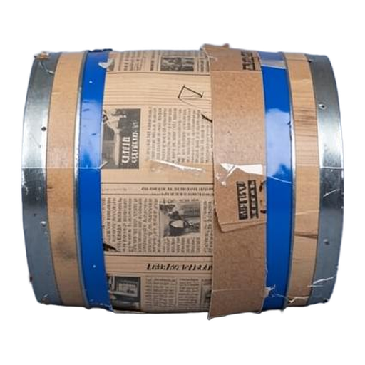
A mixed media collage of wooden barrel made from cut paper, magazine clippings, and cardboard, held together with visible scotch tape and glue. The barrel's curved staves are formed from strips of brown construction paper and weathered magazine clippings, while the metal hoops are cut from glossy blue encyclopedia pages. Roughly torn edges and visible tape seams create a tactile, layered texture that contrasts the smooth, printed wood grain with the matte Side view, single centered object on a solid contrasting background. Flat lighting, clean edges, no text.
Robot
Player typed: "robot"
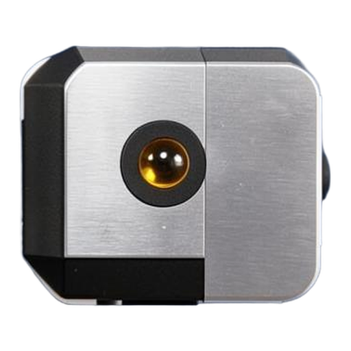
mixed media collage style paper cutout, side view, flat lighting, clean edges, robot, The robot features a boxy, industrial silhouette with rounded corners, constructed from brushed steel plates and matte black chassis panels. Its most distinctive feature is a single, glowing amber optical sensor centered on its face, single centered object, contrasting solid background color, no text
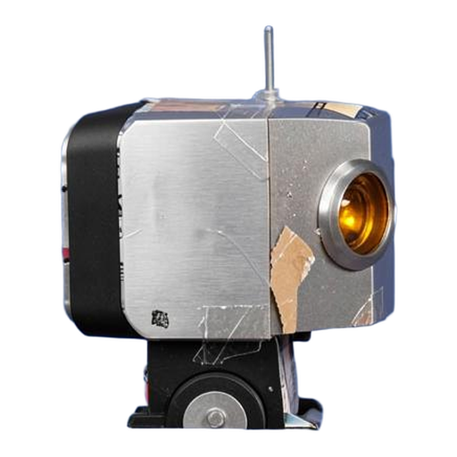
A mixed media collage of robot made from cut paper, magazine clippings, and cardboard, held together with visible scotch tape and glue. The robot features a boxy, industrial silhouette… brushed steel plates Side view, single centered object on a solid contrasting background. Flat lighting, clean edges, no text.
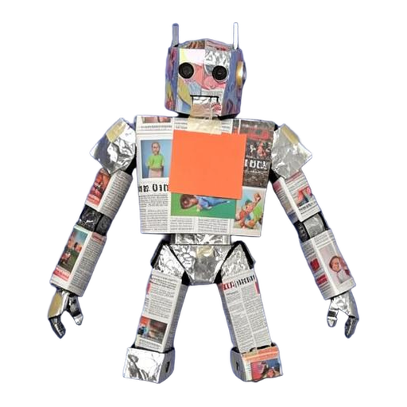
A mixed media collage of robot made from cut paper, magazine clippings, and cardboard, held together with visible scotch tape and glue. The robot's angular form is constructed from a patchwork of glossy magazine advertisements and textured encyclopedia pages, featuring metallic silver foil scraps for joints and vibrant primary-colored cutouts for its chest panel. Its surface reveals a chaotic yet cohesive texture where the smooth sheen of children's book illustrations clashes with the rough Side view, single centered object on a solid contrasting background. Flat lighting, clean edges, no text.
Campfire
Player typed: "campfire"
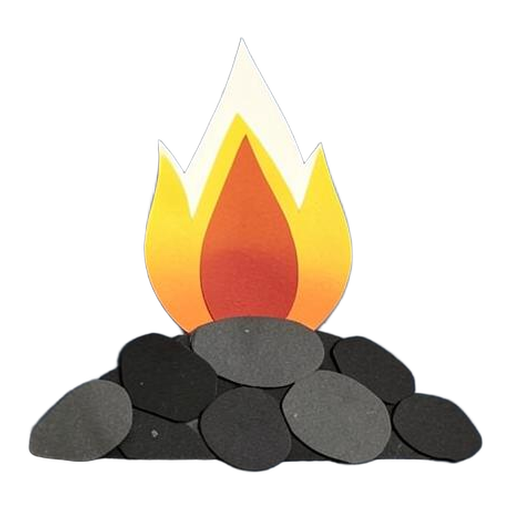
mixed media collage style paper cutout, side view, flat lighting, clean edges, Campfire, The sprite features a rough, semi-circular mound of dark charcoal and grey stones supporting a dynamic flame composed of layered teardrop shapes in gradients from deep orange at the base to bright yellow and white, single centered object, contrasting solid background color, no text
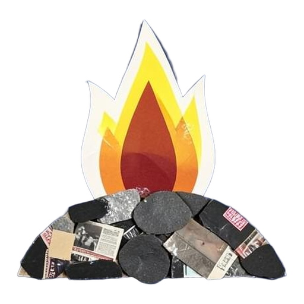
A mixed media collage of Campfire made from cut paper, magazine clippings, and cardboard, held together with visible scotch tape and glue. The sprite features a rough, semi-circular mound… Side view, single centered object on a solid contrasting background. Flat lighting, clean edges, no text.
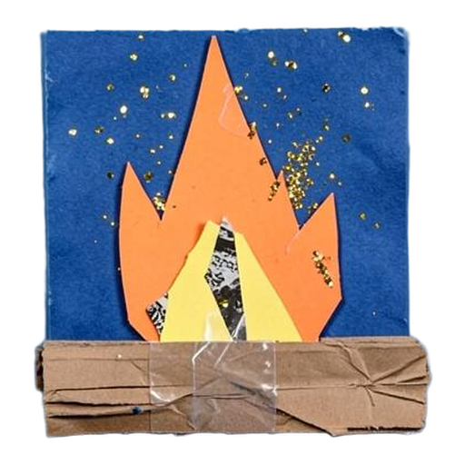
A mixed media collage of Campfire made from cut paper, magazine clippings, and cardboard, held together with visible scotch tape and glue. The fire's jagged shape is constructed from torn orange and yellow magazine clippings layered over crumpled brown cardboard for the log base, while textured blue construction paper forms the night sky. Glittery gold confetti specks the flames to mimic sparks, contrasting with the rough, fibrous Side view, single centered object on a solid contrasting background. Flat lighting, clean edges, no text.
Treasure Chest
Player typed: "treasure chest"
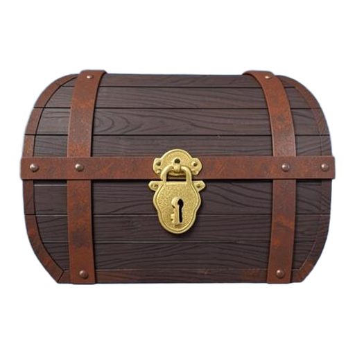
mixed media collage style paper cutout, side view, flat lighting, clean edges, treasure chest, The chest is a sturdy, rounded-rectangular box made of dark oak planks bound by thick, rusted iron bands. Its front features an ornate, golden lock plate with a single key, single centered object, contrasting solid background color, no text
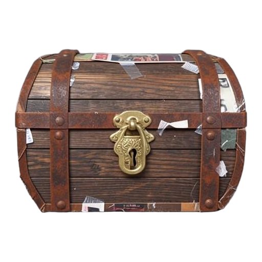
A mixed media collage of treasure chest made from cut paper, magazine clippings, and cardboard, held together with visible scotch tape and glue. The chest is a sturdy, rounded-rectangular box made of dark oak planks… Side view, single centered object on a solid contrasting background. Flat lighting, clean edges, no text.
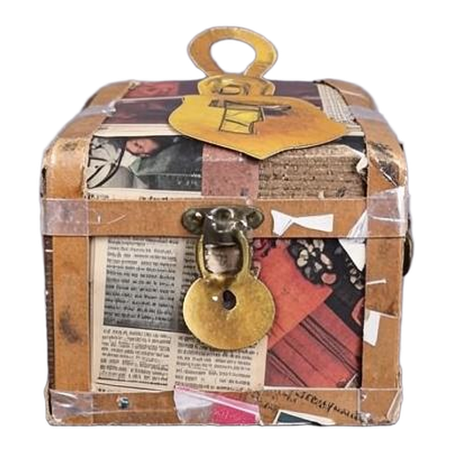
A mixed media collage of treasure chest made from cut paper, magazine clippings, and cardboard, held together with visible scotch tape and glue. The chest's rigid form is constructed from layered cardboard scraps and glossy magazine clippings, with a lid formed by a cut-out illustration of a golden lock… Side view, single centered object on a solid contrasting background. Flat lighting, clean edges, no text.